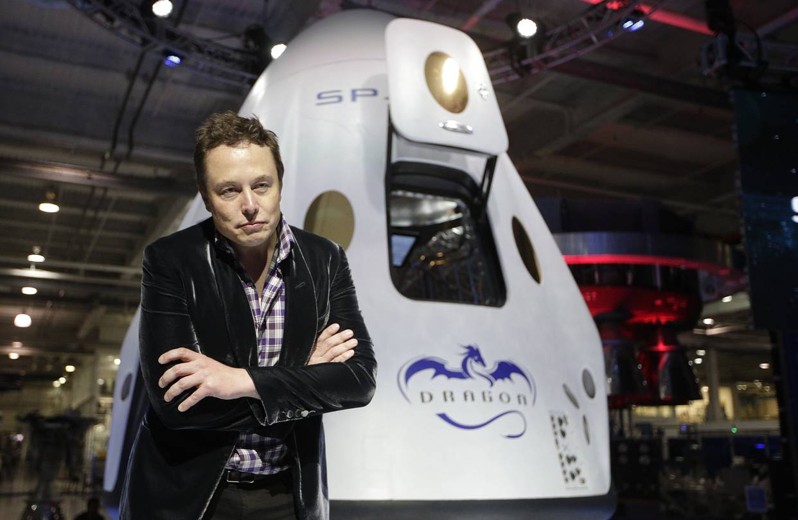
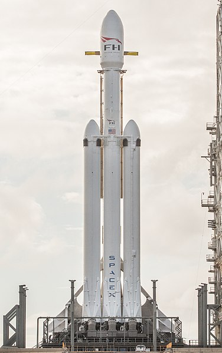

The rise of SpaceX and the future of Elon Musk’s Mars dream
In less than two decades, SpaceX went from Elon Musk’s dream of a greenhouse experiment on Mars to conducting the majority of U.S. rocket launches.
Falcon 1
The Falcon 1 is a small, partially reusable rocket capable of placing several hundred kilograms into low earth orbit. It also functioned as a testbed for developing concepts and components for the larger Falcon 9. Initial Falcon 1 flights were launched from the US government's Reagan Test Site on the island atoll of Kwajalein in the Pacific Ocean, and represented the first attempt to fly a ground-launched rocket to orbit from that site

Falcon Heavy
Falcon Heavy (FH) is a super heavy lift space launch vehicle designed and manufactured by SpaceX. The Falcon Heavy is a variant of the Falcon 9 launch vehicle comprising three Falcon 9 first stages: a reinforced center core, and two additional side boosters. All three boosters are designed to be recovered and reused. The side boosters assigned to Falcon Heavy's first flight were recovered from two prior Falcon 9 missions.
Elon Musk's Tesla Roadster
Elon Musk's Tesla Roadster is an electric sports car that served as the dummy payload for the February 2018 Falcon Heavy test flight and became an artificial satellite of the Sun. "Starman", a mannequin dressed in a spacesuit, occupies the driver's seat. The car and rocket are products of Tesla and SpaceX, respectively, both companies founded by Elon Musk.
.jpg)